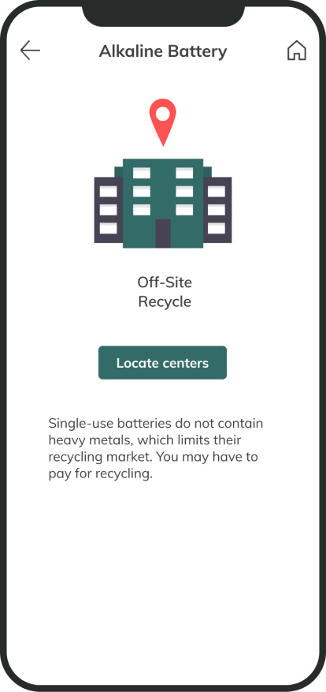
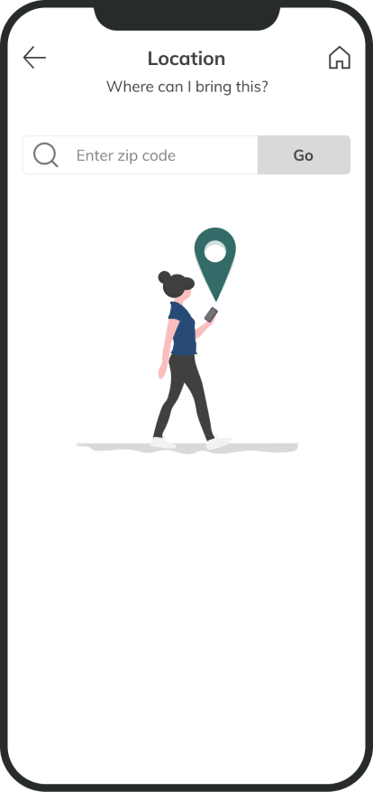
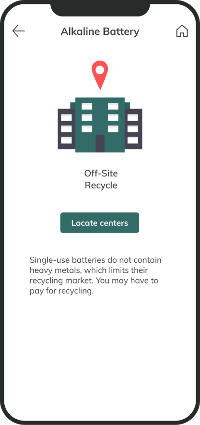
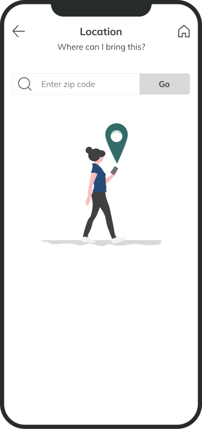

Plant Parenthood
Area of focus
Using research to guide & focus the team
Collaborating with different functions to create cohesive product
Creating an executable design that the team can quickly iterate on
Additional details
8 weeks to deliver fully functional product
Provided with a Product Vision to expand on
Team included 2 designers, 4 data science partners, and 4 web devs
Problem:
Humans need to rethink how we are interacting with our environment. Creating better recycling habits will directly affect the world and how the future lives in it.
Solution:
Focus on reaching as large an audience as possible and help them to create better recycling habits.